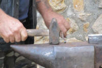

Four past forms

If you haven't followed the introductory guide to English tenses yet, please consider doing so now (new tab).
 |
Talking about the past |
Here we consider four past tense forms. English past forms are not hugely complex but they are more complicated than the ones used by many other languages. English uses a variety of forms to talk about different aspects or ways of seeing the past. If you are unclear about the difference between tense and aspect, it will help if you followed the guide to tense and aspect before going on (new tab).
There is also a separate
guide to the present perfect
which contains a contrast with the past simple so
that will not be covered here.
Another guide covers the past perfect simple and progressive so that
will not be considered in any depth here.
Compare these examples and see if you can figure out what the difference in meaning is:
- I called you on the 14th June
- I worked in London from 1998 till 2004
- I always went to school by bus
- I was reading a book
- I was just getting on the bus when I saw her
- He was watching television while she was gardening
- I used to go to school by bus and ...
- ... I would always try to sit at the back
Click here when you have an answer.
| Tense | Example | Use | More examples | |
| 1 | Past simple | I called you on the 14th June | Referring to something that occurred at a point in past time and is finished. Here the tense refers to quite short or instantaneous events. | The sun rose at 6:25 She left the house and walked up the road to the bus stop |
| 2 | Past simple | I worked in London from 1998 till 2004 | Here the tense refers to events of long duration. As in example 1, the action or event is finished. | She cycled from London to Paris They travelled for months He hated her for the rest of his life |
| 3 | Past simple | I always went to school by bus | This is similar to example 2 but with the insertion of the adverbial (usually, always, repeatedly, every year etc.) the sense is of a repeated series of habitual actions. Remove the adverbial and you get a different meaning. The sense is also that the habit is discontinued. | He cycled to work in the summertime They usually took their holiday in France |
| 4 | Past progressive | I was reading a book | Here we know neither when the action began nor when (or whether) it finished. | He was studying German
at Oxford The bus was running late She was working in Finance |
| 5 | Past progressive vs. Past simple | I was just getting on the bus when I saw her | Here we have two actions. It is often referred to as the interrupted past because it can be seen as a short action (saw) 'interrupting' a longer action (getting on the bus). | I was reading a book when the
telephone rang She was crossing the road when the bus hit her |
| 6 | Past progressive | He was watching television while she was gardening | This use refers to two actions or events happening simultaneously and of some duration. |
He was doing the washing up while I was fixing the car They were cutting the grass and she was picking apples |
| 7 | 'used to' | I used to go to school by bus and ... | Here the verb carries the meaning of a discontinued past habit. No adverbial (as in example 3) is needed. | They used to work here. She used to visit more often |
| 8 | 'would' | ... I would always try to sit at the back | Here the verb also carries the meaning of a discontinued past habit with no adverbial needed (but one is often added). | I would often read on the beach She would stutter when she was nervous |
It is important to remember that many languages do not
distinguish between progressive and instantaneous actions. In
German, for example, ich kam
could be translated either as I came or
I was coming.
The context will usually make things clear or an adverbial such as
at that moment may be added. In many other languages, the same thing applies.
Many languages do not have a form analogous to these uses of used
to and would at all.
A few notes:
- I called you on the 14th June
The simplest form of the past in English and the one usually taught first. There is more on this in the guide to basic verb forms including a discussion of pronunciation, spelling and irregular forms. - I worked in London from 1998 till 2004
Note the finished nature of the action. For more, see the guide to the present perfect where the two forms are compared. - I always went to school by bus
As we noted above, if you remove the adverbial the sense changes to that in example 1: a single finished, short past event unless the context makes it clear that this was a habit. - I was reading a book
This form tell us a little about how the speaker views the action (its aspect) but gives no further information except that the action was progressive. We don't know when it started and we don't know when it finished. - I was just getting on the bus when I saw her
We don't know from this whether the speaker continued to get on the bus or stopped because he saw her. We need more context to know (see below under time lines). - He was watching television while she was gardening
This is the usual way of talking about two progressive actions happening at the same time. However, providing the context is clear, it is possible to use the simple past to do this. For example, He read while I watched TV. - I used to go to school by bus and ...
- ... I would always try to sit at
the back
Both these forms refer to discontinued past habits but would is rarer as a way of setting the scene. It is, however, very common to start with a used to expression and then continue using would. For example
We used to take our holidays in Margate where the kids would go to the beach all day and we would spend our time reading or shopping. In the evening we would all meet up for dinner and then we'd go on to see a show or something.
For past states, only used to is usually possible:
We can have
I used to drive to work early in the morning
and
I would drive to work early in the morning
BUT, we can have
I used to own a Jaguar
but NOT
*I would own a Jaguar
|  |
Iterative or durative? |
This is a semantic issue rather than a grammatical one and to
understand the aspect which is signalled by the -ing form
of a verb we need to distinguish between instantaneous verbs such as
bang, hit, glance, break etc. and durative verbs such as
read, stay, live, listen etc.
The distinction can be seen in these examples:
- Iterative use with instantaneous verbs:
- She was hitting the the keyboard too hard
She was breaking bottles in the garden - Progressive or background use with durative verbs:
- They were reading in the train
John was listening to the music
Not all verbs fall neatly into one or the other category,
naturally, and in cases of ambiguity, English resorts to the use of
adverbials to make the aspect clear so we may find, e.g.:
He was trying to repair the pipe all morning
(progressive)
vs.
He was trying to repair the pipe on and off for weeks
(iterative)
Some languages reserve a special form of the verb to distinguish and iterative aspect but English simply re-purposes the -ing form for this distinction.,
Form issues |
past simple and past progressive tenses
The formation of the tenses is not usually troublesome for learners. It is the concepts which take time to absorb and master.
As we saw with the contrast between present simple and present progressive, the following are the usual issues which arise concerning form.
- Many languages change the ending (inflect) for all persons and
number so, for example, in French, we see:
je mangeais (I ate)
tu mangeais
il/elle/on mangeait
nous mangions
vous mangiez
ils/elles mangeaient
The same applies to most European languages and some are even more complicated than French.
English is unusual because the verb past tense form, regular or not, NEVER changes. We have, therefore, I ate, you ate, they ate, we ate, everyone ate etc.
The very simplicity of this can confuse low-level learners used to looking for inflexion in the verb. - To form questions and negatives, many languages rely on changes
to word order or simply on intonation or punctuation.
English, however, makes use of the auxiliary verb do (called an operator) followed by the base form (bare infinitive) of the verb to form both questions and negatives.
We get, therefore:
She went > Did she go? > She didn't go
etc.
At elementary level in particular, this can be confusing and hard to remember so we get errors such as:
*Went you?
*Made you?
*He not go
etc. - The progressive is generally simpler to form (which may be one reason learners tend to overuse it). The important thing to note is that the past tense of be is irregular and does actually inflect for number, although on a simple basis with two forms only, was and were and without any inflexion for person.
- The negative and interrogative forms of the past progressive
follow the pattern of the present progressive using:
For negatives: subject + past of be + not + -ing form to produce, e.g., She was not paying attention
For interrogatives: past of be + subject + -ing form to produce, e.g., Were they playing tennis?
used to and would
These two verbs work very differently because they are, in fact, modal or semi-modal in nature.
- would
- makes the question by simple inversion of subject and verb
and no other changes:
She would often get angry > Would she often get angry?
makes the negative by the insertion of not after the auxiliary:
She would often get angry > She would not / wouldn't often get angry - used to is more complicated because there are two possible forms of negatives and interrogatives:
-
More common / less formal Less common / more formal Declarative She used to work in a bank Interrogative Did she use(d) to work in a bank? Used she to work in a bank? Negative She didn't use(d) to work in a bank She use(d)n't to work in a bank
The -d inflexion is optional in most cases. That's the line taken on this site but purists might differ.
The less common and more formal ways to form questions and negatives are probably better left to higher levels or even consigned to receptive knowledge only. They are probably dying out.
 |
teaching with time lines |
Time lines are simple, graphical representations of how languages use
tense and aspect to visualise events in time as if they were clothes on
a line. They can be simple,
effective and clear but you need to get them right to make sure that
that's true. In other words, you need to plan what you are going
to present.
Here's a task:
On a piece of paper, draw a horizontal arrow and mark it something
like this:

Now, take these examples and see if you can show the various uses of the past forms by drawing time lines.
- John hit him
- John cycled from France to Sicily / John was reading on the train
- John was reading the paper while I was doing my homework
- John cycled to work every day
- John was cycling to work when an idea hit him (but he carried on)
- John was cycling to work when a bus hit him (so he didn't carry on!)
- John used to go to France where he would visit old friends
Here's an example for sentence 1 (the easiest):

Click here when you have done that to compare your lines.
| 2 |
 |
| 3 |
 |
| 4 |
 |
| 5 |
 |
| 6 |
 |
| 7 |
 |
There's another short test on this here.
| Related guides | |
| guide to English tenses | a simple introduction to tense analysis |
| the tenses map | for the clickable diagram of all English tenses |
| the tenses index | for the index of all guides in this area |
| present perfect | the dedicated guide to the tense (simple and progressive) which also contrasts it with the past simple |
| past perfect | the dedicated guide to the tense (simple and progressive) which also considers when it is not used |
| basic verb forms | which considers matters of spelling and pronunciation of past tenses |
| aspect and tense | to disentangle the concepts |
| using time lines | for some more ideas |
| time, tense and aspect | for a more technical set of guides to the tense areas of English |